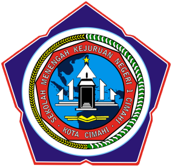

{kind=link}
Eid Al-Fitr Moment (2026)
With wife and daughter.
Born on December 1, 1996, and currently living in Kabupaten Bogor, Indonesia. Married with one daughter. Responsible, adaptable, and able to work well in fast-paced environments. Continuously improving my education, technical skills, and professional certifications to grow in the IT field.
IT professional with 7 years of experience as a NOC Engineer supporting network and system operations in production environments. Experienced in incident management, troubleshooting, and maintaining service availability. Shift leader with exposure to operational coordination and escalation. Seeking a network engineer, system administrator, or IT operations role.
NOC Engineer (Outsourced to PT Haleyora Powerindo)
(May 2018 – May 2026)
Technical Support (Internship)
(Aug 2017 – May 2018)
Technical Support
(Aug 2015 – Feb 2016)
 CISCO (2023)
CISCO (2023)CCNA: Switching, Routing, and Wireless Essentials

SMK Negeri 1 Cimahi (2012-2016)Rekayasa Perangkat Lunak (Software Engineering), 4-year vocational program
| Category | Skills & Technologies |
|---|---|
| Monitoring Tools | Zabbix, Cacti, Hariff, Sinergi |
| Incident & Asset Management | Ticketing Systems, Root Cause Analysis |
| Networking Fundamentals | TCP/IP, VLAN, Routing, Switching |
| Network Configuration & Troubleshooting | Routers, Switches, OLTs, Access Points |
| Vendors & Devices | Cisco, Huawei, ZTE, Raisecom, Fiberhome |
| Programming & Database | PHP, Python, C++, SQL Server, MySQL |
| Web Development | Laravel, ReactJS, NodeJS |
| Web Hosting | AWS Lightsail, Vercel |
| Operating Systems | Linux, Windows Server |
| Contact | Information |
|---|---|
| artadtc@gmail.com | |
| Phone | +62 81 3839 05 876 |
| Location | Blok B7 No. 58 Puri Harmoni Pasir Mukti, Citeureup, Kab Bogor |
| linkedin.com/in/artaditc | |
| GitHub | github.com/250401010481artadi |
With wife and daughter.
An internal knowledge-sharing systems based on WordPress
Automate ssignment letters, NOC attendance tracking, and K3 authorization documents
Oil gauge benchmark testing application utilizing LabJack U6 DAQ hardware
{kind=link}
{kind=link}
{kind=link}